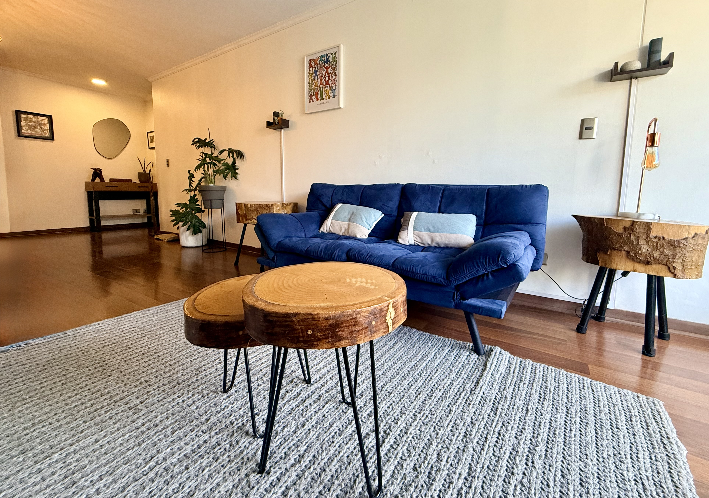
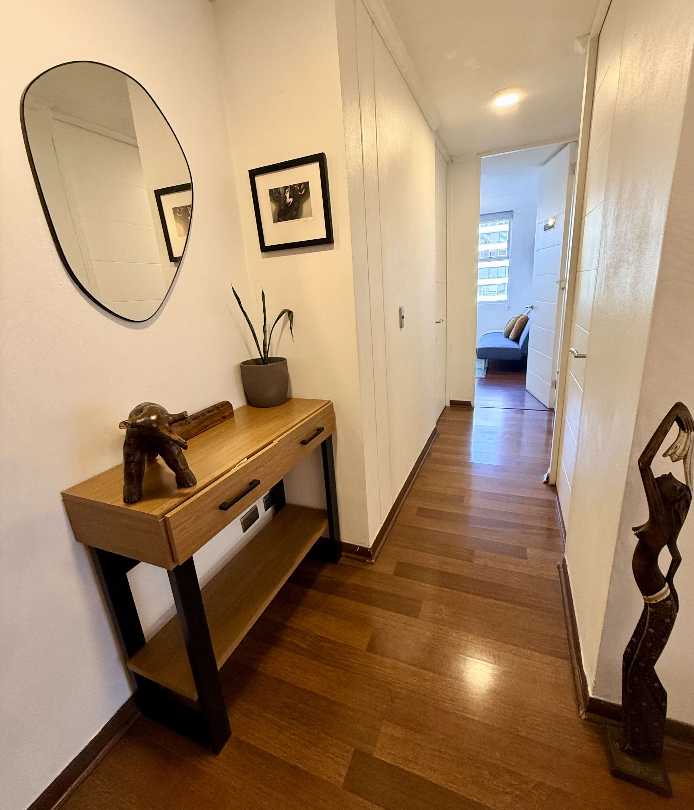
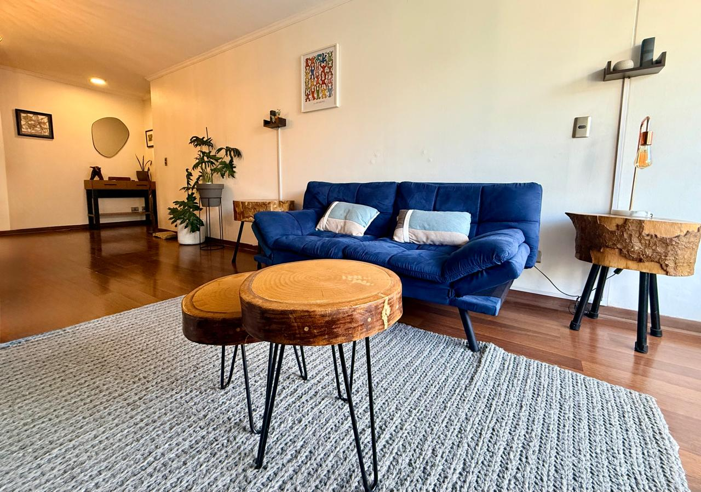

/* MOBILE NAV */
    @media(max-width:900px){.home-header{height:auto}.home-header-inner{min-height:84px;width:calc(100% - 36px)}.menu-btn{display:block}.nav{display:none;position:absolute;left:0;right:0;top:84px;padding:10px 18px 20px;background:var(--paper);border-bottom:1px solid var(--line);box-shadow:0 10px 25px rgba(0,0,0,.08);flex-direction:column;align-items:stretch}.nav.open{display:flex}.nav a{border-right:0;border-bottom:1px solid var(--line);padding:13px 8px}.nav .reserve{margin:12px 0 0;text-align:center}.hero-grid{grid-template-columns:1fr}.hero-photo{order:1;min-height:430px}.hero-photo img{min-height:430px}.hero-copy{order:2;padding:52px 30px 47px}.approach-grid{grid-template-columns:1fr}.approach,.approach:first-child,.approach:last-child{border-right:0;border-bottom:1px solid var(--line);padding:24px 0}.approach:last-child{border-bottom:0}.business-grid,.contact-grid,.topics-grid{grid-template-columns:1fr}.business-image{order:-1}.business-image img{height:300px}.service-icons{margin-top:32px}.contact .gallery{height:420px}.topics-editorial{display:none}.topics-btn{justify-self:start}.footer-grid{grid-template-columns:1fr 1fr}}
    @media(max-width:560px){.wrap{width:calc(100% - 32px)}.home-header-inner{width:calc(100% - 28px)}.brand img{width:55px;height:55px}.brand-name{font-size:18px}.hero-photo,.hero-photo img{min-height:340px}.hero-copy{padding:43px 16px 40px}.hero h1,.hero-statement{font-size:52px}.hero-lead{font-size:13px}.hero-actions{flex-wrap:wrap;gap:15px}.approaches{padding:54px 0 57px}.business{padding:58px 0}.business-grid{gap:35px}.business-image img{height:230px}.service-icons{grid-template-columns:1fr 1fr;row-gap:22px}.service{border-right:0;border-bottom:1px solid var(--line);padding:12px 10px 17px}.service:nth-child(odd){border-right:1px solid var(--line)}.service:nth-last-child(-n+2){border-bottom:0}.contact{padding:56px 0}.contact h2{font-size:42px}.map{height:220px}.gallery{height:390px}.topics-copy{grid-template-columns:58px 1fr;gap:14px}.topics-icon{width:58px;height:58px}.topics-copy h2{font-size:27px}.footer-grid{grid-template-columns:1fr;gap:30px}.footer-bottom{flex-direction:column}.footer-legal{flex-wrap:wrap}}
  </style>
</head>
<body class="home">
  <header class="home-header">
    <div class="home-header-inner">
      <a class="brand" href="index.html" aria-label="Psicología Humanista – Ignacio Bravo Bustos">
        
        <span class="brand-name">Psicología Humanista<small>Ignacio Bravo Bustos</small></span>
      </a>
      <button class="menu-btn" type="button" aria-label="Abrir menú" aria-expanded="false" aria-controls="mainNav">☰</button>
      <nav class="nav" id="mainNav">
        <a href="index.html">Inicio</a>
        <a href="registro.html">Regístrate</a>
        <a href="psicoterapia.html">Enfoques</a>
        <a href="temas.html">Temas</a>
        <a href="index.html#contacto">Consulta</a>
        <a href="empresas.html">Empresas</a>
        <a class="reserve" href="reserva.html">Reserva tu hora</a>
      </nav>
    </div>
  </header>

  <main>
    <section class="hero" id="hero">
      <div class="hero-grid">
        <div class="hero-copy">
          <p class="kicker">Acompañamiento psicoterapéutico</p>
          <h1>Psicólogo en Ñuñoa | Ignacio Bravo Bustos</h1>
          <p class="hero-statement">Un espacio para comprenderte, sanar y crecer.</p>
          <p class="hero-lead">Psicoterapia humanista integrativa para personas que buscan bienestar, claridad y una vida con mayor sentido.</p>
          <div class="hero-actions"><a class="btn-primary" href="reserva.html"><span class="hero-action-icon">↗</span>Reserva tu sesión</a></div>
        </div>
        <div class="hero-photo"><button class="about-hero-trigger" type="button" aria-controls="about-panel" aria-expanded="false">Acerca de mí <span>↓</span></button></div>
      </div>

    <section class="about-panel" id="about-panel" aria-hidden="true">
      <div class="about-panel-inner">
        <div class="about-panel-heading">
          <p class="kicker">Acerca de mí</p>
          <h2>Conoce a Ignacio</h2>
        </div>
        <div class="about-panel-content">
          <p>Nací en Santiago de Chile en el año 1985 y soy Psicólogo Magíster en Clínica Gestalt, con diplomados en PNL y Trauma Complejo Relacional. Llevo más de 15 años de trayectoria en contextos relacionados a la infancia y adolescencia, trabajando 10 años en Programa de Reparación en Maltrato, siendo Director de PRM Ciudad del Niño Isla de Maipo. Además, en contextos ligados a adolescencia y responsabilidad penal adolescente. Desde el año 2019, atiendo de manera particular a población infanto-juvenil y adulta.</p>
          <p>Por otra parte, me desempeño como consultor y capacitador a empresas en procesos de gestión y cambio organizacional, diseñando programas que las organizaciones necesiten.</p>
          <p>Respecto al área docente, soy profesor de postgrado en línea Humanista – Gestalt en Instituto Superior de Especialidades Profesionales (ISEPS) – Perú.</p>
        </div>
        <button class="about-close" type="button" aria-label="Cerrar Acerca de mí">Cerrar <span>↑</span></button>
      </div>
    </section>

      <div class="wrap">
        <div class="section-head">
          <p class="kicker">Enfoques terapéuticos</p>
          <h2>Psicoterapia en Ñuñoa</h2>
        </div>
        <div class="approach-grid">
          <a class="approach" href="psicoterapia.html">
            <div class="approach-icon"><svg viewBox="0 0 40 40" fill="none" aria-hidden="true"><path d="M20 34V16M20 18c-5-2-7-5-7-9 5 0 8 3 7 9Zm0 3c5-2 8-5 8-10-5 0-9 3-8 10Z" stroke="currentColor" stroke-width="1.5" stroke-linecap="round"/></svg></div>
            <div><h3>Psicoterapia Humanista</h3><p>Un enfoque centrado en la persona, su experiencia y sus posibilidades de crecimiento, desde la aceptación y la empatía.</p></div>
          </a>
          <a class="approach" href="psicoterapia.html">
            <div class="approach-icon"><svg viewBox="0 0 40 40" fill="none" aria-hidden="true"><circle cx="20" cy="13" r="5" stroke="currentColor" stroke-width="1.5"/><path d="M11 32c.8-6.4 4-10 9-10s8.2 3.6 9 10M15 25l5 3 5-3" stroke="currentColor" stroke-width="1.5" stroke-linecap="round"/></svg></div>
            <div><h3>Psicoterapia Gestalt</h3><p>Una mirada al aquí y ahora, a las experiencias y emociones presentes y al darse cuenta de cómo vivimos.</p></div>
          </a>
          <a class="approach" href="psicoterapia.html">
            <div class="approach-icon"><svg viewBox="0 0 40 40" fill="none" aria-hidden="true"><path d="M20 7c-5 0-8 4-8 8 0 2.1.8 3.9 2.2 5.2C11.9 22 11 24 11 27c0 4 3.5 6 9 6s9-2 9-6c0-3-.9-5-3.2-6.8C27.2 18.9 28 17.1 28 15c0-4-3-8-8-8Z" stroke="currentColor" stroke-width="1.5"/><path d="M16 13c2 1 2 3 0 4m8-4c-2 1-2 3 0 4M16 25c1.2-1 2.8-1 4 0 1.2-1 2.8-1 4 0" stroke="currentColor" stroke-width="1.2" stroke-linecap="round"/></svg></div>
            <div><h3>Programación Neurolingüística (PNL)</h3><p>Herramientas prácticas para comprender patrones de pensamiento, lenguaje y comportamiento y ampliar tus posibilidades de acción.</p></div>
          </a>
        </div>
      </div>
    </section>

    <section class="business" id="empresas">
      <div class="wrap business-grid">
        <div class="business-copy">
          <p class="kicker">Servicios para empresas</p>
          <h2>Capacitación y<br>Consultoría</h2>
          <p>Programas a medida para fortalecer equipos, liderazgos y culturas organizacionales saludables.</p>
          <a class="business-cta" href="empresas.html">Conoce más sobre servicios para empresas <span>→</span></a>
        </div>
        <div class="business-services">
          <div class="service-icons">
            <div class="service"><svg viewBox="0 0 48 48" fill="none"><circle cx="24" cy="13" r="5" stroke="currentColor" stroke-width="1.5"/><circle cx="12" cy="20" r="4" stroke="currentColor" stroke-width="1.5"/><circle cx="36" cy="20" r="4" stroke="currentColor" stroke-width="1.5"/><path d="M16 34c.7-6 3.2-9 8-9s7.3 3 8 9M5 35c.5-5 2.4-7.5 6.5-7.5M43 35c-.5-5-2.4-7.5-6.5-7.5" stroke="currentColor" stroke-width="1.5" stroke-linecap="round"/></svg><span>Desarrollo de<br>Liderazgos</span></div>
            <div class="service"><svg viewBox="0 0 48 48" fill="none"><path d="M9 12h19a6 6 0 0 1 6 6v5a6 6 0 0 1-6 6H18l-7 5v-5H9a6 6 0 0 1-6-6v-5a6 6 0 0 1 6-6Z" stroke="currentColor" stroke-width="1.5"/><path d="M28 15h5a6 6 0 0 1 6 6v4c0 3.3-2.7 6-6 6h-2v4l-6-4" stroke="currentColor" stroke-width="1.5"/></svg><span>Comunicación y<br>Trabajo en Equipo</span></div>
            <div class="service"><svg viewBox="0 0 48 48" fill="none"><circle cx="24" cy="24" r="13" stroke="currentColor" stroke-width="1.5"/><path d="m24 15 2.8 5.7L33 24l-6.2 3.3L24 33l-2.8-5.7L15 24l6.2-3.3L24 15Z" stroke="currentColor" stroke-width="1.5"/></svg><span>Bienestar<br>Organizacional</span></div>
            <div class="service"><svg viewBox="0 0 48 48" fill="none"><path d="M8 38V25M17 38V19M26 38V27M35 38V12" stroke="currentColor" stroke-width="1.5" stroke-linecap="round"/><path d="m7 20 9-7 9 5 10-10" stroke="currentColor" stroke-width="1.5" stroke-linecap="round" stroke-linejoin="round"/></svg><span>Capacitación<br>a Medida</span></div>
          </div>
          <div class="business-image"></div>
        </div>
      </div>
    </section>

    <section class="contact" id="contacto">
      <div class="wrap contact-grid">
        <div>
          <p class="kicker">Contacto y ubicación</p>
          <h2>Psicología en Ñuñoa</h2>
          <div class="contact-row"><svg viewBox="0 0 24 24" fill="none"><path d="M4 6h16v12H4zM4 7l8 6 8-6" stroke="currentColor" stroke-width="1.5"/></svg><div><a href="mailto:ignaciobravobustos@gmail.com">Escríbeme</a></div></div>
          <div class="contact-row"><svg viewBox="0 0 24 24" fill="none"><path d="M12 21s6-5.4 6-11a6 6 0 1 0-12 0c0 5.6 6 11 6 11Z" stroke="currentColor" stroke-width="1.5"/><circle cx="12" cy="10" r="2" stroke="currentColor" stroke-width="1.5"/></svg><div><p>Profesor Rodolfo Lenz 505, Depto 55, Ñuñoa</p></div></div>
          <div class="map"><iframe src="https://www.google.com/maps?q=Profesor%20Rodolfo%20Lenz%20505%20Ñuñoa&output=embed" loading="lazy" referrerpolicy="no-referrer-when-downgrade" title="Ubicación del Centro de Salud Mental Ñuñoa"></iframe></div>
        </div>
        <div class="gallery" aria-label="Espacios de atención">
          <figure></figure>
          <figure></figure>
          <figure></figure>
          <figure></figure>
        </div>
      </div>
    </section>

    <section class="topics" id="temas">
      <div class="wrap topics-grid">
        <div class="topics-copy">
          <div class="topics-icon"><svg viewBox="0 0 40 40" fill="none"><path d="M20 34V16M20 18c-5-2-7-5-7-9 5 0 8 3 7 9Zm0 3c5-2 8-5 8-10-5 0-9 3-8 10Z" stroke="currentColor" stroke-width="1.5" stroke-linecap="round"/></svg></div>
          <div><p class="kicker">Temas de actualidad</p><h2>Reflexiones y recursos<br>para tu bienestar emocional.</h2></div>
        </div>
        <div class="topics-editorial" aria-hidden="true">Psicología · bienestar · reflexión</div>
        <a class="topics-btn" href="temas.html">Ir al blog <span>→</span></a>
      </div>
    </section>
  </main>

  <footer class="site-footer">
    <div class="footer-legal">
      <a href="terminos.html">Términos y Condiciones</a>
      <a href="politica.html">Política de Seguridad</a>
    </div>
    <p class="footer-date">Enero 2026</p>
  </footer>

  <div class="site-footer-text">
    <p>
      Centro de salud mental en Ñuñoa. Psicoterapia Humanista, Gestalt y PNL.<br>
      Ps. Mg. Ignacio Bravo - N° 98737 de Registro Nacional de Prestadores Individuales de Salud
    </p>
  </div>

  <a href="https://wa.me/56961560364" class="whatsapp-btn" target="_blank" rel="noopener" aria-label="Contactar por WhatsApp">
    <svg width="24" height="24" viewBox="0 0 24 24" fill="currentColor" aria-hidden="true">
      <path d="M17.472 14.382c-.297-.149-1.758-.867-2.03-.967-.273-.099-.471-.148-.67.15-.197.297-.767.966-.94 1.164-.173.199-.347.223-.644.075-.297-.15-1.255-.463-2.39-1.475-.883-.788-1.48-1.761-1.653-2.059-.173-.297-.018-.458.13-.606.134-.133.298-.347.446-.52.149-.174.198-.298.05-.371-.025-.52-.075-.149-.669-1.612-.916-.579-.242-.5-.669-.51-.173-.008-.371-.01-.57-.01-.198 0-.52.074-.792.372-.272.297-1.04 1.016-1.04 2.479 0 1.462 1.065 2.875 1.213 3.074.149.198 2.096 3.2 5.077 4.487.709.306 1.262.489 1.694.625.712.227 1.36.195 1.871.118.571-.085 1.758-.719 2.006-1.413.248-.694.248-1.289.173-1.413-.074-.124-.272-.198-.57-.347m-5.421 7.403h-.004a9.87 9.87 0 01-5.031-1.378l-.361-.214-3.741.982.998-3.648-.235-.374a9.86 9.86 0 01-1.51-5.26c.001-5.45 4.436-9.884 9.888-9.884 2.64 0 5.122 1.03 6.988 2.898a9.825 9.825 0 012.893 6.994c-.003 5.45-4.437 9.884-9.885 9.884m8.413-18.297A11.815 11.815 0 0012.05 0C5.495 0 .16 5.335.157 11.892c0 2.096.547 4.142 1.588 5.945L.057 24l6.305-1.654a11.882 11.882 0 005.683 1.448h.005c6.554 0 11.89-5.335 11.893-11.893a11.821 11.821 0 00-3.48-8.413Z"/>
    </svg>
  </a>
  <script src="script.js"></script>
</body>
</html>